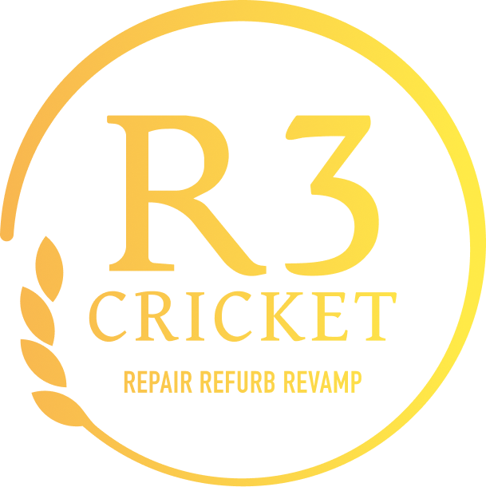

R3 vs Sandstorm X1
A documented R3 Mega Smash fixture. The result, date and score are not displayed until they can be verified from the scorecard.
Match archive

R3 CRICKETREPAIR · REFURB · REVAMPThe home of HT-R3 Cricket Club. One team, one identity, built around the game.
Matches are presented here on the R3 website, without sending visitors to other cricket platforms.
A documented R3 Mega Smash fixture. The result, date and score are not displayed until they can be verified from the scorecard.
R3 has participated in the Triangle Cricket League Mega Smash competition, Division 7.
Player profiles will appear only when names and team membership have been verified. No fictional players or stock profile photos.
The public club profile was identified, but its roster could not be reliably extracted. This section intentionally does not display sample players.
Batting, bowling and team records will be published here when confirmed from match scorecards or league exports.
Career runs, strike rates, top scores and season leaders.
Awaiting verified statisticsWickets, economy, bowling averages and best figures.
Awaiting verified statisticsHighest totals, winning margins and match history.
Awaiting verified statisticsOur actual team photos will live here, not stock images.
Black and gold, proudly R3. Team and match photography can be added directly to this site.
Match recordings can play right here using embedded YouTube videos. No links to cricket scorecard websites.
Once the R3 YouTube channel or individual video links are provided, recordings can be embedded directly on this page.